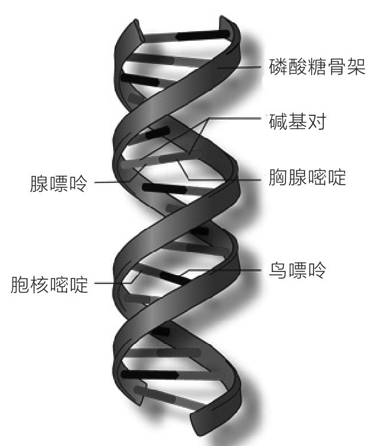

——迈蒙尼德
人们都喜欢巧合故事，认为它很少见。但是当这其中的一些人成为陪审员，遇到可能需判处死刑的案件时，他们却认为不可能出现法庭取证出错的巧合。不过陪审员在定罪之前仍会要求提供强有力的法庭证据。这是好事。但奇怪的是，另一方面，当面对强有力的法庭证据证明嫌疑人无罪时，他们却经常宣告嫌疑人有罪。公众都错误地以为，如果没被损坏，DNA是证明嫌疑人有罪或无罪的确凿证据。但是，巧合性犯罪证据导致误判的情况比我们想象的可能性更大。
DNA证据非常有力，对于仅粗略了解DNA证据是怎么起作用的人来说更是如此。由于在重大案件的复杂调查过程中DNA既可以用作定罪的证据，也可以用作无罪的证据，对DNA的复杂性知之甚少的人摇身变成法庭审判专家，他们狡猾地操控着对他们有利的判断。什么是DNA证据？它能证明什么？不能证明什么？这个问题太复杂，难以给出一个完整的回答。然而，我们必须提出这个问题，以便重点讨论巧合在什么样的情况下会被认作为有罪或无罪的证据。证据出错——旁证、巧合证据、物证——都可能妨碍判刑。
DNA检测之前，通常要进行血型、血清测试和常规指纹检查。与DNA指纹鉴定相比，这些常规司法测量方法非常不精准。约40%的美国人是O型血，在许多刑事案件中，指纹匹配并不是决定性因素。巴瑞·舍克曾是O.J.辛普森辩护律师团的一员，他指出，DNA鉴定是“判定无罪的黄金标准，同时也是揭示真相的神奇黑盒子”。目前DNA指纹分析是证明误判犯人无罪的重要手段。然而，辩护律师或控方律师会从有利于他们的角度利用DNA测试，或向陪审团展示DNA测试无懈可击的科学准确性，或抨击DNA证据收集和保存过程的瑕疵。在O.J.辛普森案件中，控方提供了大量的DNA证据，但辩护方说服了陪审团，指出这些证据被损坏。
DNA指纹分析并不绝对可靠。其中可能有无心之错，也可能有人故意篡改。机器缺陷、环境影响和人为处理出错——这些都可能导致错误的检验结果。2006年5月11日，一名独立调查员复查了原来由休斯敦警察局取证和器材室分析的数百起刑事案件。在7个司法科学科目中，包括血清学、DNA和痕量证据，1980年的案件中发现重大违规操作问题。在复查的135起DNA分析中，其中有43起（32%）被确定为存在严重的虐待囚犯问题和蓄意欺诈嫌疑。[124]
将DNA基因指纹与犯罪现场找到的样本进行匹配并不是判定有罪或无罪的可靠证据。以著名的亚拉·甘比拉西奥案件为例，2010年11月，13岁的亚拉在位于意大利北部布伦巴泰迪索普拉村的家中失踪。三个月后，她的尸体在离家10千米远的另一个村庄被发现。调查持续了两年毫无进展，后来发现一名男子的DNA与亚拉内衣上存留的DNA非常相似，但并不是完全匹配。案发时该男子在南美洲，但这一匹配引发对另一个村庄的搜查，最后发现两枚被一名男子舔过的邮票。该男子死于1999年。“这只是一个巧合，”探长曾决定放弃她唯一的重要线索时告诉记者说，“案件和该男性之间没有任何关联。”“你不能杜撰捏造。整个案件不可思议。”[125]破案过程复杂曲折，但最终破案了。好在碰巧在南美洲的人有不在现场的证明。好在另一名男子已在案发前去世。
陪审团成员应该了解，或者至少法官应该告诉他们，DNA分析是一个非常复杂棘手的过程，很容易导致误判。有些信息本来只是旁证，却可能被用作确凿的罪证，有时这也在所难免。案情分析的精确度可能会掩盖实际真相。同样，往往有些信息是真正的罪证，却可能被用作洗脱罪名的证据。
一方面，DNA分析需要获取犯罪现场未受污染的生物试样——血液、精子、皮肤细胞、发根、唾液或汗液等。犯罪现场周围的环境——植物、昆虫、细菌或其他人——的DNA通常都会污染样品。再就是我们对DNA指纹独特性的理解。这里有一些问题需要弄清楚。DNA指纹有多独特？两个人（非同卵双胞胎）有可能碰巧拥有相同的DNA基因图吗？DNA分析是否万无一失？是否存在假阳性或假阴性错误？从理论上来说，两个完全不同的人（非双胞胎）的DNA仍有可能相同（尽管可能性极小）。当法庭仅根据DNA证据就判定一个无辜的人死罪，你执行死刑时想过这种可能性吗？
假阳性错误取决于个体情况，其总体可能性估计在100:1至1000:1之间。[126]处理样本时也会出错。假阳性可能性计算错误将导致无辜者受牵连，尤其在用DNA排查法来确认罪犯的情况下。实验室很少（尽管偶尔会）误读检验结果。因为随机匹配可能匹配成功，他们可能也会得出错误的检验报告。遗憾的是，很少有部门给陪审团提供假阳性错误频率的统计数据。为了公正准确评估DNA证据，巧合性匹配（不相干的两人DNA基因图谱相同）的可能性和假阳性匹配的可能性都应该考虑。[127]
有时可能涉及垃圾科学。许多人认为毛发样本证据即DNA证据。其实并不是这样。只有发根样本才能确定DNA证据。在大多数法医鉴定中，毛发样本证据基于主观的显微镜观察和对比，是一个真正的虚假证据。因为至今没有可靠的科学方法来确定没有发根的毛发样本归属。[128]然而，几十年来，法庭一直依靠所谓的毛发样本专家为原告提供证词。
看看唐纳德·盖茨、柯克·奥多姆和桑塔·特里布尔三名黑人男子的案件，根据显微镜下的毛发对比证据他们三人被判有罪，直到后来DNA分析结果与毛发样本证据相矛盾。1990年，陪审团听信了原告律师夸大毛发样本匹配的统计可能性，判定特里布尔谋杀罪成立，判处他有期徒刑20年。仅因为在滑雪面具中发现了一根头发，特里布尔在监狱待了23年，之后被确认无罪释放。[129]匹配？和什么匹配？科学技术至今仍没有在抽样总体中确定毛发特征在统计学上有意义的频率分布。[130]那么这个科学证据来自哪里呢？在缺乏核基因，也没有科学方法在更大的样本总体中确定毛发所有者的情况下，专家又怎能证明这一匹配呢？然而，我们经常听到专家告诉陪审团，用作证据的头发与某个特定的人有关：“根据我的经验及在实验室所做的16000次头发对比，我认为那些头发来自死者。”[131]任何人都可以有自己的观点，但在法庭上，专家的观点往往被视为证据。这不是随口一说，如果可能给无辜的人带来牢狱之灾，这就是不负责任的行为。没有人可以通过微观毛发分析就得出毛发样本来源的统计概率。然而，在过去20年中，28名FBI实验室专家中有26名在证词中强调了毛发样本匹配的可靠性。在特里布尔先生的案件中，专家称所有微观特征都匹配。在结案陈词中，控告方再三强调了一个误导性的虚假统计数据：这根毛发属于其他人而非特里布尔先生本人的概率只有“千万分之一”。[132]
不幸的是，生活中的犯罪并不像我们在电视或电影中看到的那样，法医分析似乎从不出错。更不幸的是，现实生活中的陪审团通常相信法官所说的，相信他们所听到的。他们相信控方律师所说——正如全盘相信法官所言——“DNA检验的优点在于它100%正确”。[133]法医检验没有百分之百确定，但是人们一直误以为DNA分析能给出“是”或“不是”的确定答案。事实上DNA分析取决于该检验的有效性，以及与嫌疑人相关的遗传基因组。但法院认为法医证据是绝对可靠的科学证明，根本没有充分考虑到它的局限性。[134]在休斯顿警察局负责的一个案件中，取证室法医分析师作了误导性的证词：“除同卵双胞胎之外，任何两个人都不可能拥有相同的DNA。”[135]任何对DNA基因图谱在取证室中的运作有所了解的人都应该知道这样的陈述是绝对错误的。平心而论，在正当诉讼程序中，应事先告知陪审团，往往会有小部分样本与DNA基因图谱相匹配。这一小概率并不排除巧合。在涉及DNA证据的绝大多数案件中，陪审团通常会获得巧合性匹配的统计数据。他们还会获悉和被告DNA基因图谱随机匹配的无关人员的概率。但是，这些数字对于陪审员来说毫无意义，因为他们认为五十万分之一这种可能性就是绝对肯定。
人类基因组
让我们简单回顾一下人类基因组的一些知识。人体每个细胞的细胞核含有23对染色体（22对常染色体，加上1对性染色体），染色体是细胞核中的DNA分子，载有遗传信息。人体有23对染色体，每对染色体中其中一条来自母亲，另一条来自父亲。只要我们意识到关于遗传信息的详细内容远比接下来几页纸上的信息复杂，我们就可以大致了解如何通过DNA鉴定人的身份。
DNA是见于活细胞中的脱氧核糖核酸（deoxyribonucleic acid）的首字母缩略词。DNA的结构像一个双螺旋式楼梯（图11.1）。

图11.1 DNA双螺旋结构图
该结构各层由核苷酸或碱基类氮碱基化学物组成，包括腺嘌呤（adenine）、鸟嘌呤（guanine）、胸腺嘧啶（thymine）和胞核嘧啶（cytosine），通常用字母A、G、T和C表示。两侧的螺旋带为磷酸糖分子。每层为两侧的螺旋带与核苷酸连接。A、G、T、C排列组合决定了一个人的基因型或遗传同一性。
为了描述DNA序列，我们首先来看短串联重复序列（STRs），即4种核苷酸A、T、G和C的组合重复序列。A、T、G和C共有4×4×4×4=256种可能组合。试想A、T、G和C 4个字母序列的任意排列，任一字母都可以重复。例如可以是AAAA或AGTC，或任何其他254种组合。可能有人的染色体短串联重复序列是AGTT、AGTT、AGTT。有的人可能是AGTT、AGTT、AGTT、AGTT。也有的人可能是6组重复组合序列，或12组。请注意，前面第一个是三组重复组合序列，第二个是四组。这就产生了更多不同的个人遗传基因变体。我们知道，在个体遗传的染色体短串联重复序列中，每对染色体中的一条来自母亲，另一条来自父亲。那么世界上两个人（不包括同卵双胞胎）拥有相同DNA的可能性接近零，但并不等于零。为了了解单细胞中双螺旋DNA分子的大小和长度，我们不妨作如下设想：DNA分子的细胞核直径小于五万分之一厘米，一旦将它完全打开，首尾相连长度为2米。可以想象DNA分子结合得有多紧密。
为了了解该模型的复杂性，请设想一下：在23对染色体中，每对染色体约有30亿个由4个核苷酸组成的序列，每对染色体分别来自母亲和父亲[136]。毫无疑问，这是一个庞大的数字。问题是我们不知道这30亿个序列中哪一个的位置会发生变化。
为了区分两个DNA百分之百匹配的人，我们必须比较大约30亿对核苷酸，这个过程不切实际，且代价高昂。我们不会这样做。相反，我们比较一小部分，找到其中的异同。如果在这一小部分中出现配对，我们计算出这种匹配巧合的可能性。我们需解决的问题是：这“一小部分”到底得要多小，才能让我们心安理得地认为这种配对并不是巧合？
法医学家仅基于13种不同的STRs就确定了随机匹配概率。他们通过人类基因组中13种不同的STRs就能鉴定出一个人的身份，希望从人体23对染色体上随机抽取的13种STRs中不会出现配对。为什么是13种？这是基于可操作性和费用决定的。他们的理由是总体样本中个体的13个位点上的STRs会有很大的变化。例如，对于3号染色体，有人可能从其母亲处遗传了5个重复序列，而有人可能从母亲处遗传了3个重复序列，从父亲处遗传了6个重复序列。在更大的样本总体中，有些重复序列很少见，而有些重复序列非常常见。只需一处不同，就能排除某人的DNA和在犯罪现场收集的DNA相同。在单个染色体中，STRs可能并不那么罕见。样本总体中低频率可能会达到0.1。但是，如果将该频率乘以选定的13对染色体上STRs频率，你会发现匹配的概率约为10-15。不过，犯罪嫌疑人的数量比全世界人口要小得多。因此实际上法医学家非常自信地认为，两个人根本不可能会有完全相同的DNA。在所有13种STRs中，两个人拥有相同DNA的可能性虽然不是零，但当样本为一组犯罪嫌疑人时，可能性就无限趋近于零了，因此我们可以假设概率为零。
换句话说，如果犯罪现场的DNA基因图谱和嫌犯相匹配，那么这个证据就表明了嫌犯的罪行。相反，如果DNA基因图谱不匹配，那么就证明嫌疑人无罪。这就是DNA指纹图谱和法医证据。无论证据指向哪边，调查必须考虑到偶然事件、巧合、人为行为和一些隐藏变量，它们常常使简单的事情变得复杂，特别对于单次调查。
中央公园的慢跑者
对无辜者的每一次误判都会有损司法公正，而中央公园慢跑者帕特丽莎·梅里强奸案却对司法公正造成严重残害。该案件中一大群拉丁裔黑人青年碰巧在那个时间经过了事发地点。即使DNA不匹配，其中5名青少年却因为出现在犯罪现场而被判刑。在真正的强奸犯认罪之前，他们已经服刑6～13年了。检察官可以用DNA证据来定罪，但当DNA证据可以洗刷嫌疑人罪名或免除嫌疑人罪责时，同一个检察官可能会争辩：DNA证据本身并不像大家认为的那样总是万无一失。[137]
检察官如此描述案件经过。1989年4月19日，一大帮闹事者涌入中央公园，碰到一名年轻的慢跑者，他们想要找她的麻烦。他们被称为一群流氓，据说一晚上都在外面闹事。他们将帕特丽莎·梅里打晕，将她拖到一个山涧旁，对她进行了性侵，然后弃她而去。该案件引起了媒体的广泛关注，因为被告全是黑人，而受害者是一名28岁的白人，是所罗门兄弟公司财务部门的投资助理，年轻有为，前途无量。帕特丽莎（她现在叫自己为特丽莎）由于遭受了创伤性的脑损伤，丢失了所有受袭击的记忆。事件引起轰动，令人愤怒，媒体大肆报道，吸引了很多观众，整个事件加剧了种族间的紧张关系。“纽约市所有人都在谈论中央公园的慢跑者，”特丽莎在她的回忆录中写道，“全国数百万的人都在谈论。即使在14年后，他们仍在回味她当年的骇人遭遇。”
是的，她只是去跑步，却因为意外生活完全被打乱。她跑步的路线偶尔会变。有时会跑到84街以北有些昏暗的地方。朋友们警告过她晚上不要一个人跑步，所以天还没有完全黑的时候她会往北跑。案发当天她跑去了84街的中央公园，又往北转向了第102街的十字路口，然后遭到残忍袭击并被强奸。自己失去所有记忆，没有目击者的证词，没有证据表明是谁做的，只能确定案发时有谁在犯罪现场附近出现。
案件经过太过残忍，没有必要再深究细节。有一段时间特丽莎一直在与死神搏斗；后来情况稳定了，但暴力袭击似乎会给她留下永久性脑损伤。她的脑肿胀非常严重，东哈勒姆大都会医院重症监护医师曾预计会出现这一症状，他们认为这将使患者“丧失思维、行为和情感能力”。[138]没有人能从强奸伤害中完全恢复，尤其是暴力强奸。但特丽莎的身体的确恢复了正常。她的生活轨迹也发生了改变，不再涉足银行投资领域。
暴力袭击和强奸案归罪在5名西班牙裔黑人青少年。侦探和检察官强迫他们在定罪证据的文件上签字，以便作为可采性证据呈给法庭。他们只是一群孩子，对公民权利一无所知。他们只是案发时出现在特丽莎附近。为此，也仅仅因为这一点，他们在1990年被判有罪。
2002年，曼哈顿地区检察官罗伯特·M.摩根索怀疑此案有滥用职权之嫌而重审。DNA证据表明，马蒂亚斯·雷耶斯强奸并殴打帕特丽莎，被判有期徒刑33年，罪犯承认自己是单独作案。但由于案件诉讼期已过，他无法被起诉。这5名青少年当时恰巧在公园案发现场附近，他们并不知道有人正在被强奸。这些青少年被无罪释放。几年后，他们承认在公园里袭击、抢劫和殴打了别人。当天晚上有几帮团伙在闲逛，他们时而分时而合。他们承认他们击倒了一个男人，把他拖进灌木丛里，往他身上倒啤酒。他们还承认曾在公园里对人进行过8次袭击。
对于特丽莎来说，那个偶然的夜晚打乱了她的生活。从此她的生活发生了翻天覆地的变化。她辞去了所罗门兄弟公司的工作，完全变了一个人。她在回忆录中写道：“我只是夜间去跑步，生活就完全被打乱。没有人像我这样毫无征兆地濒临死亡。我已经学会接受现实，无论是好的还是坏的。”在2004年，她写道：[139]
公众需要认真了解DNA的工作原理和巧合发生的过程，陪审团应该告知公众，即使是警方调查非常仔细的案件。一个喷嚏可以通过火车、飞机，甚至是风中的一片落叶，将一个无辜者的DNA传播数英里（1英里=1.6千米）。甚至是鱼也可以通过粘在鸟蹼上的卵迁到新建的池塘。公众需要了解如下问题：DNA的高度匹配及其方法，多短的DNA序列能包含无生理功能的巧合性重复？如何从巧合随机的毛发匹配、鞋印、指纹、声音和目击者的错误指认中得出结论？
完全了解构成DNA的4个核苷酸的排列并不非常重要，但是清楚知道DNA易受污染，知道有些核苷酸对的重复序列在一些样本中常见，而在其他样本中罕见，这些知识对嫌犯的法庭审判却非常重要。
证据的真实性（有罪或无罪）可能受隐藏的巧合影响，公众不应该仅仅基于DNA分析或目击者的指证来判断嫌犯是否有罪。我希望公众能更了解取证的复杂性，这样媒体和陪审员们才会明白，无论多么科学的解释，犯罪证据并不总是像在法庭上所描述的那样万无一失。
5名被指控的青少年在被捕后对犯罪事实供认不讳。
你在疑惑，为什么一个无辜的人会承认他或她没有犯下的罪行？我们对电视和电影吹嘘的美国刑事司法的诉讼精确性有严重的误解。首先，我们必须明白，美国监狱现有囚犯220万人，而这其中有超过200万人之所以在关押，是因为他们为了避免可能被陪审团判决的最高刑罚，而接受了认罪协议。对于更严重的罪行，如强奸和谋杀，就是坐牢或处死的博弈。因此，被告在承认他或她没有犯下的罪行前，已经进行了风险估算和成本效益判断。这是一种本能的自我防御选择，是在不完善的刑事司法体系压力下作出的理性决定。之所以说刑事司法体系不完善，是因为认罪协议几乎总是认定被告有罪，结果往往偏向起诉方。我们可能会认为很少有无辜的被告会承认罪行，但是根据《昭雪计划》报告，10%的被告承认了他们没有犯下的罪行，在大约30%的DNA无罪释放的案件中，被告都在供词上签字。其中许多被告受到胁迫，他们不了解法律，不知道正在签署的是什么文件，很多时候他们认为这样做可以避免更严厉的刑罚。中央公园强奸案的5名嫌疑人都还是孩子，他们受人摆布，被欺骗说一旦承认罪行就可以回家。
通过认罪协议承认罪行，可以使资源有限、有其他麻烦缠身的穷人获得低于指控的刑罚。美国纽约州南区地区法官杰德·拉克夫说：“每名辩护律师都有过类似经历，委托人开始见面时会说他是无辜的，但当后来看到检方提供的证据，就会改口说他有罪……但有时情况相反。委托人事实上无罪却谎称有罪，因为他决定‘代人受罪’……但是我们很少考虑到以下这种可能性：被告可能无罪，但却被胁迫承认较轻的罪行。因为法庭受审和受审失败的结果太严重而不敢承担这个风险。”[140]
无罪者的平反昭雪
美国的监狱关押的人口数排名世界第一，占世界监狱人口数的四分之一。[141]绝大多数监禁都是因为非暴力罪行。在撰写本文时，美国的联邦和州立监狱约有230万人，其中有84万多人（近37%）是非裔美国人。自1970年以来增长了546%，仅过去6年就增长超过50%！[142]这意味着每100名美国成年人中就有1人入狱，每28名儿童中就有1名孩子的家长在监狱服刑，美国监狱每年的花费高达2600亿美元[143]。真是浪费人的潜力的疯狂行为！有人认为，大规模监禁使犯罪率大幅下降（自1991年达到高峰以来，暴力犯罪率已下降了51%，财产犯罪率下降了57%）。这听起来合乎逻辑，但其实不尽然。犯罪率急剧下降的原因并不显而易见。是巧合或侥幸，或许有数百种隐藏变量可以解释犯罪率急剧下降的原因。最近，布伦南司法中心根据最新的综合数据，通过实证调查，发布了一份严谨而全面的研究报告，研究结论是：“鉴于目前的高监禁率，继续监禁更多的人对降低犯罪率几乎没有任何影响。”[144]这份长达140页的研究报告令人印象深刻，它采用一种数学方法，通过对比，区分每个变量带来的影响。报告确定了相关性，但却对因果关系避而不谈。
我们当然知道这是有原因的，但我们无法准确地知道是什么原因。因此我们不能肯定地说监禁率上升会导致犯罪率下降。监禁使很多家庭破裂；无辜的孩子受到心理伤害；而如果不进行强化再教育，服刑者回到社会后将难以找到工作并对社会作出贡献。我们可以确定的是，美国在记录在案的人均监禁率方面领先世界，排在俄罗斯和卢旺达之后。美国监禁人数比世界任何其他民主制国家都高，占全世界监狱总人口数的四分之一。2014年，死囚犯有3070人，在1409名得以平反无罪释放的人中有515人是死囚犯。比例高达16.8%！[145]自1976年以来，美国判处死刑的案件共有1386起，其中冤假错案144起，罪犯被平反无罪释放。[146]这意味着自1976年以来，约1/10的人不应被判以死刑。
美国最高法院指出执行死刑有正当的道德理由。他们声称，只要程序保障措施能降低冤假错案风险，发达社会可以允许死刑。[147]这句话的关键词是：降低。但这也不能完全消除将无辜者处以死刑的可能性。因此，如果我们认同本章开篇迈蒙尼德的格言，显然死刑应该废除。法官约翰·保罗·史蒂文斯2008年也得出这个结论，他指出，法院给出死刑存在的理由在文明社会是无法容忍的。[148]不管如何论证，它都不是逻辑性强的科学推理。总会出现假阳性和假阴性结果；总是会有无辜的人被判处死刑，而有罪的人无罪释放。行为和本质的可变性太多太复杂，难以约束人是否基于事实做的决策。没有法律制度可以消除冤假错案的可能性。2014年8月，美国有3070名囚犯被判死刑。[149]根据最近一项研究，预计有123人可能是被冤枉的。[150]
我赞同迈蒙尼德的格言。我也同意约翰·保罗·史蒂文斯的观点，我们不大可能消除冤假错案。我可以肯定地说，在可预见的将来，我们仍不可能消除这一可能性。为什么？因为我们面对的变量太多，而这些变量取决于周围的环境，这些环境因素又和更复杂的人性混合在一起。
调查2009年的《昭雪计划》发现，在239起DNA误判后免责的案件中，179起为根据目击者的误认定罪。[151]到2013年，因DNA误判而免责的人数上升到250人。[152]在114例案件中，真正的罪犯（根据所谓的DNA证据确认）仍逍遥法外行凶作恶，而误判的人正在监狱中服刑。[153]在撰写本文时，美国过去50年中已经有1587人被免罪。[154]几乎每一天我们都会看到又一起类似案件。我们了解到警察有时将证人扣押在问询室，或者酒店房间，强迫他们作指证。他们将证人扣押直到他们同意作证为止。我们了解到，当控方证人陈述前后矛盾时，不建议控方律师做记录，以避免成为无罪辩护的证据。[155]我们听说了警察的失误和检察机关的不当行为。我们了解到，有些能证明被告无罪的确凿证据却从未移交给辩护律师。我们知道警方手写的嫌疑人供词，是没有律师在场的情况下审问嫌疑人而获得的。我们了解到有些定罪根本没有和犯罪有关的物证。我们想知道宪法是否有道德权利允许有死刑。迈蒙尼德斯在中世纪就看到了这个问题。他的道德格言是：“宁可放过一千名罪犯，也不可错杀一名无辜者。”即使今天看来，这句话仍旧充满智慧。[156]